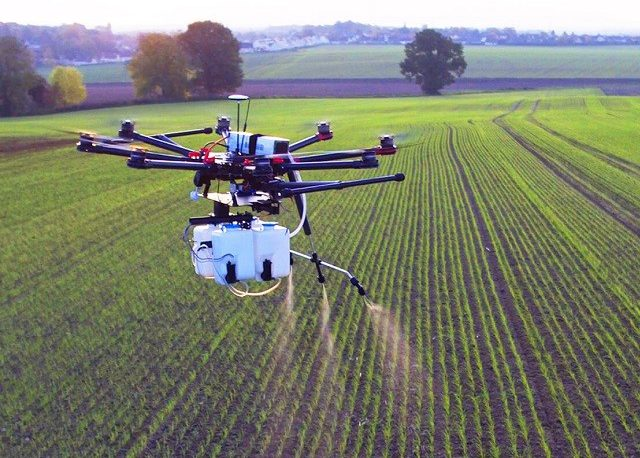

LIST OF ENGINEERING
- CSE

- Computer science focuses on the development and testing of software and software systems. It involves working with mathematical models, data analysis and security, algorithms, and computational theory. Computer scientists define the computational principles that are the basis of all software.
- AGRI
- 
- The branch of engineering involved with the design of farm machinery, with soil management, land development, and mechanization and automation of livestock farming, and with the efficient planting, harvesting, storage, and processing of farm commodities.
- FOODTECH
- Food technology is a branch of food science that addresses the production, preservation, quality control and research and development of food products. Early scientific research into food technology concentrated on food preservation. Nicolas Appert's development in 1810 of the canning process was a decisive event.
- CHEM
- Chemical engineering involves the production and manufacturing of products through chemical processes. This includes designing equipment, systems, and processes for refining raw materials and for mixing, compounding, and processing chemicals.
- IT

- Information technology is building communications networks for a company, safeguarding data and information, creating and administering databases, helping employees troubleshoot problems with their computers or mobile devices, or doing a range of other work to ensure the efficiency and security of business information